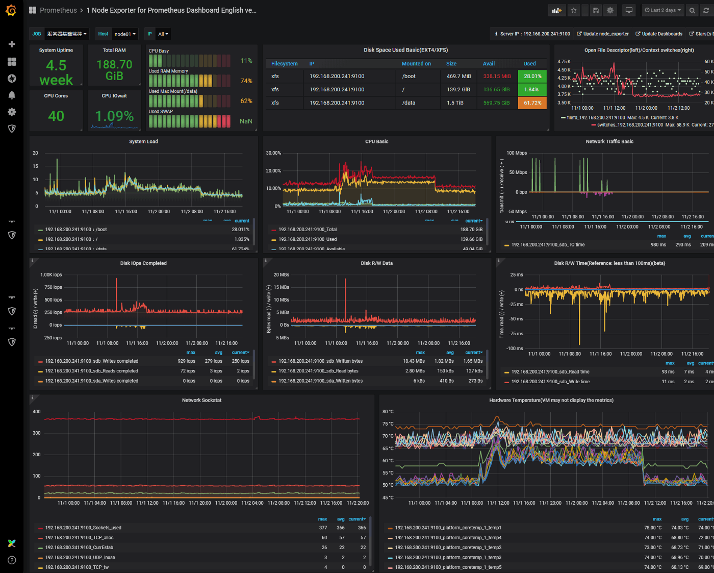

October 2020 ~
My job is to provide stable web application server by monitoring the status of the servers using monitoring tool and analyzing log files to maintain the server’s stability as a server administrator.

Maintain and monitor the web application server, and develop using Java, Python, and any other languages for creating tools to maintain and monitor the servers.
• Monitor servers’ status to keep servers’ stability using Jenkins, Grafana, and Maxigent Plus.Description
• For convenience, need to integrate script files that have been used for maintaining a server.
• More than 20 separated files need to be integrated 1 file for a server.
• After the project is done, 1 integrated file should be run as before multiple files are integrated.
Used Technology
• Scripting Tool (WLST), MS VS Code, Shell script, Eclipse, Linux, Git
Description
• Before upgrading, our monitoring system runs every 10 minutes to collect the data.
• The monitoring system needs to collect the data in real-time.
• We use Prometheus to collect the data in real-time, and show the data in Grafana as multiple types of graphs.
• Prometheus, and alertmanager are running on docker server.
Used Technology
• Prometheus, Alertmanager, Jenkins, MySQL, MS VS Code, Shell script, Eclipse, Linux, Git, Docker
Description
• We have millions of records between customers and employees in US.
• We have to manage and check these files from all servers (New Jersey and Texas).
• These files are stored in specific directories in each server.
• Get all files from servers and databases, compare and update the check date or delete the records.
• The key point is the speed of the program, because the records, the servers, and the files are too many.
Used Technology
• Java, Eclipse, Linux, Git, MSSQL